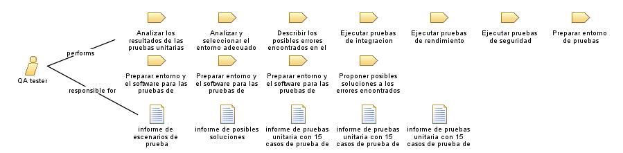

Role: QA tester
Relationships

Primary Performs
Analizar los resultados de las pruebas unitarias realizadas al software
Analizar y seleccionar el entorno adecuado para pruebas
Describir los posibles errores encontrados en el software a partir de los resultados de las pruebas
Ejecutar pruebas de integracion
Ejecutar pruebas de rendimiento
Ejecutar pruebas de seguridad
Preparar entorno de pruebas
Preparar entorno y el software para las pruebas de integracion
Preparar entorno y el software para las pruebas de rendimiento
Preparar entorno y el software para las pruebas de seguridad
Proponer posibles soluciones a los errores encontrados en el software
Modifies
informe de escenarios de prueba
informe de posibles soluciones
informe de pruebas unitaria con 15 casos de prueba de integracion
informe de pruebas unitaria con 15 casos de prueba de rendimiento
informe de pruebas unitaria con 15 casos de prueba de seguridad
Main Description
Rol el cual tiene como objetivo realizar pruebas al software, tales como las pruebas unitarias de rendimiento, integridad, seguridad y funcionalidad.